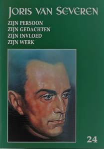

Met deze aflevering
zijn we aan het 24e
Jaarboek Joris van Seveen toe. De openingsbijdrage is van
de hand van ondergetekende en handelt over Enkele krachtlijnen in het denken
van Joris van Severen. Daarin komt het
jeugdbewegingsfenomeen aan bod met zijn
conservatief-revolutionaire fundamenten als vrijheid, orde en
aristocratische ingesteldheid.
Daarop
sluit Henk Tijssen aan met een vergelijking tussen Het Noord-Nederlandse Nationaal
Verbond en het Zuid-Nederlandse Verdinaso. Met
de auteur dienen we te besluiten dat er onmiskenbaar parallellen
te bespeuren vallen tussen de beide bewegingen.
In
Hans de Goeij, studentenleider,
katholiek revolutionair en Dinaso, gaat
Ruud Bruijns de rol en de verdiensten na, binnen het Nederlandse
studentenleven, het Nederlandse katholicisme en het Verdinaso
van deze merkwaardige persoonlijkheid, die de Verdinaso-idealen
levenslang hoog in het vaandel voerde.
Eerder van documentair
gehalte is het stukje uit de Britse krant, opgevist door Ruud
Bruijns over Joris van
Severen in de ogen van ‘The Catholic Herald’.
Een tijdseigen beoordeling die afbreuk doet aan de onzin van wat
heden ten dage veelal over het Verdinaso en zijn leider
gedebiteerd wordt.
Ook over de verhoudingen
en de samenwerking tussen zo verscheiden persoonlijkheden als Joris van Severen en Pierre Nothomb
is nog niet alles gezegd, zoals blijkt uit deze bijdrage van
Ruud Bruijns. Hij zoekt een antwoord op de vraag of Van Severen onder invloed
stond van belgicist Nothomb, of dat Van Severen juist invloed
uitoefende op Nothomb.
Dat de verhoudingen
tussen Ward Hermans en Joris van Severen bij momenten soms
turbulente vormen aannamen blijkt ten volle uit hun
correspondentie. Ook uit De
briefwisseling tussen Joris van Severen en Ward Hermans,
als bijeengesprokkeld door Gui van Gorp en Maurits Cailliau,
blijkt dit overduidelijk. Daarin o.m. boeiende informatie
omtrent Ward Hermans kijk op de in 1928 door Robrecht de Smet
opgerichte Jong Vlaamse Gemeenschap, die daartoe inspiratie
geput had bij het voorbeeld van de Jungdeutsche Orden van Artur
Mahraun in Duitsland. Dat Hermans uit het Verdinaso ontslagen
werd vooraleer zelf ontslag te kunnen nemen zal dan ook wel
niemand verwonderen.
Op zoek naar de wortels van de ‘Orde Joris van
Severen’ brengt veelal
onbekende gegevens aan als destijds te berde gebracht in een
uiteenzetting van Jef Werkers. Deze bijdrage geeft bovendien een
inkijk op de door Louis Gueuning ondernomen pogingen om de
ideële erfenis van Joris van Severen ongeschonden doorheen de
moeilijke oorlogsjaren te loodsen.
Tenslotte is er nog het
Verhaal gedaan door Jules de
Cock nopens zijn aanhouding, de moordpartij van Abbeville,
enz. ons aangereikt door Jan Verstraete, gewezen
stafhouder van de Antwerpse balie en geannoteerd door onze
jaarboekredactie. Een verhaal dat in de tijd verder reikt dan
alle tot nog toe gekende getuigenissen van de lotgevallen die de
weggevoerden van mei 1940 te verduren kregen.
Afsluiten
doen we als steeds met een gedicht van Fernand Florizoone, dat Vlaanderen - In memoriam Joris van
Severen tot titel kreeg.
Ook voor deze editie van
ons jaarboek konden we andermaal rekenen op de gewaardeerde
medewerking van Frederic van Waeijenberge als onmisbare
tekstcorrector.
Maurits Cailliau
(eindredacteur)